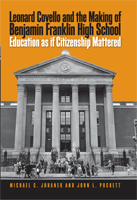

How can we educate students to be better citizens?
How can we educate students to be better citizens?


 How can we educate students to be better citizens?
How can we educate students to be better citizens?

|  |
Leonard Covello and the Making of Benjamin Franklin High SchoolEducation as if Citizenship MatteredMichael C. Johanek and John L. Puckettcloth EAN: 978-1-59213-521-9 (ISBN: 1-59213-521-8) |
"Leonard Covello offers a model for urban education today, especially with the growing emphasis on community. A well-written, eye-opening book."
—Maxine Greene, Teachers College-Columbia University and author of The Dialectic of Freedom
What is the mission of American public education? As a nation, are we still committed to educating students to be both workers and citizens, as we have long proclaimed? Or have we lost sight of the latter goal of encouraging students to be contributing members of a democratic society? What might schools look like if citizenship mattered as much as reading and math?
In this enlightening book, Michael Johanek and John Puckett describe one of America's most notable experiments in "community-centered schooling." In the process, they offer a richly contextualized history of twentieth-century efforts to educate students as community-minded citizens. The authors argue compellingly that the democratic goals of citizen-centered community schools can be reconciled with the academic performance demands of contemporary school reform movements. Using the twenty-year history of community-centered schooling at Benjamin Franklin High School in East Harlem as a case study—and reminding us of the pioneering vision of its founder, Leonard Covello—they suggest new approaches for educating today's students to be better "public work citizens."
Excerpt available at www.temple.edu/tempress
"This is a very timely book. Leonard Covello is one of the great characters in the history of American education and surprisingly few people know about him these days. Add to this the fact that the story of community-centered schooling is exactly what the doctor ordered for the test-driven and market-oriented mode of schooling that is on the march today.... This is first-rate historical writing about a compelling case."
—David Labaree, Stanford University School of Education, and author of The Trouble with Ed Schools
"There are very few books that offer an historical perspective as rich as this one on a range of contemporary educational issues, from the role of schools in promoting full-fledged citizens to related questions about the place of community in urban revitalization."
—William J. Reese, University of Wisconsin-Madison, and author of America's Public Schools: From the Common School to "No Child Left Behind"
About the Authors vi
Acknowledgments vii
Introduction 1
PART ONE Contexts and Social Forces
CHAPTER ONE - The Community School Idea: Social Centers, 21
Community Centers, Community Schools
CHAPTER TWO - East Harlem in the Early 1930s: Constraints and 48
Opportunities
CHAPTER THREE - Leonard Covello: The Heart of the Matter 77
PART TWO The Making of Benjamin Franklin High School
CHAPTER FOUR - The High School on East 108th Street 109
CHAPTER FIVE - Community Schooling for Cultural Democracy: 149
Premises and First Steps
CHAPTER SIX - The East Harlem Campaigns 181
CHAPTER SEVEN - The High School on Pleasant Avenue 198
PART THREE The Community School Idea since World War II
CHAPTER EIGHT - Drift and Renewal: Community Education and 227
Community Schools
CHAPTER NINE - Learning from the Past: Covello and Democratic 251
Citizenship in Perspective
Notes 263
Index 353
Photographs follow page 182
 | Michael C. Johanek is a Vice President at Teachscape, a professional development services company. |
 | John L. Puckett is Associate Professor in the Policy, Management, and Evaluation Division of the University of Pennsylvania Graduate School of Education, and author of Dewey's Dream (Temple). |
© 2015 Temple University. All Rights Reserved. This page: http://www.temple.edu/tempress/titles/1857_reg.html.